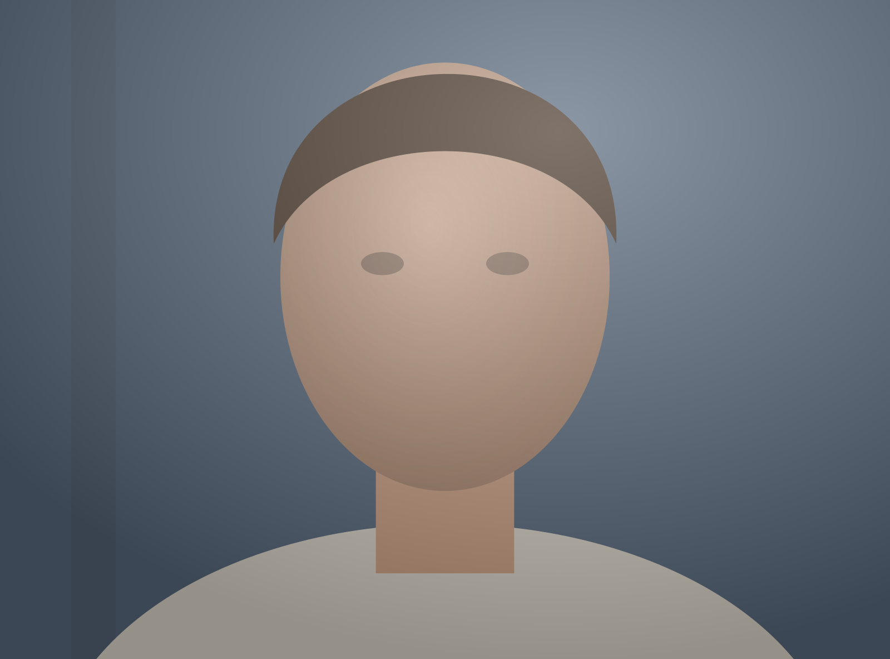

Reference
Pick the face every frame lines up toScan
Looking for your face in 3,593 photosReview
41 photos the scan wasn’t sure aboutDays
One photo for every day
2014
Timelapse
3,547 frames · Sep 2012 – Aug 2022Start with one photo of your face
Every other day will be lined up to it. Front-on, eyes open, even light works best.
or drop it here
Then the folder of daily photos
Subfolders are included. Photos are read, never moved or changed, and nothing leaves this Mac.
Recent
Reference

No face inside the crop
Eyes level −0.4°
Face found 5 points
Drag the frame to move it, the corners to resize. Arrow keys nudge.
Finding your face…
No face found inside the crop. Widen the crop or pick another reference photo.
Read 2,231 of 3,593 photos
Found you in 3,529 of 3,593 photos
2,174 you 27 unsure 30 someone else or no face 412 remembered from the last scan
About 36 s left
41 need your eye
Stop scanning?
The 2,231 photos read so far are remembered, so the next scan continues from here.
All 41 looked at
29 kept, 12 left out. You can change any of them later from Days.
2014
- More photos that day
- Your pick
- No photo
- Left out
14 Aug
2014
Thursday
- Frame
- 0812 / 3,547
- Day
- 712 since start
- Alignment fit
- 1.2 px
- Light evened
- +⅔ EV · zone 5⅓ → 6
Aligning 1,204 of 3,547 · newest frames appear as they finish
00:27.0 / 01:58.2